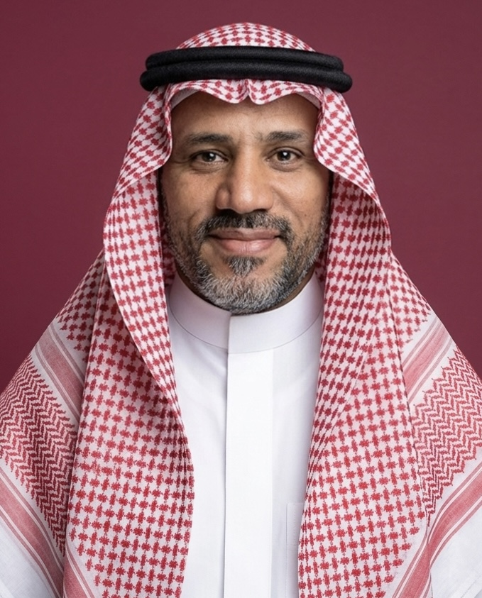
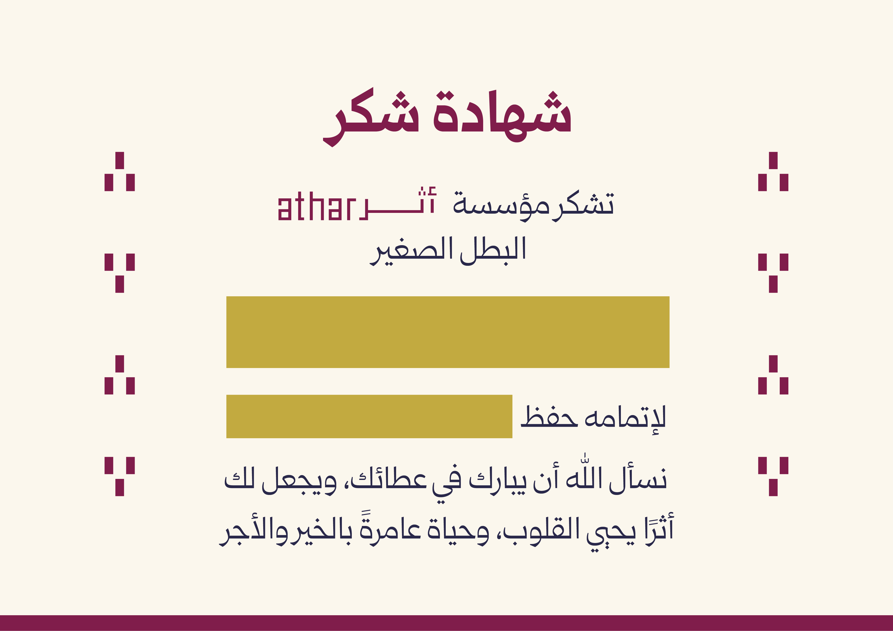

التقارير الإعلامية
تقارير مصوّرة ومكتوبة ترصد واقع الوقف ومستجدّاته.
أوّلُ مؤسسةٍ إعلاميةٍ عربيةٍ متفرّغةٍ للوقف، توعيةً وتوثيقًا. من عمّان، نُعيدُ حكايات الواقفين من الأرشيف إلى الناس، بلغةٍ إعلاميةٍ تليقُ بها.
تقارير مصوّرة ومكتوبة ترصد واقع الوقف ومستجدّاته.
تحقيقاتٌ معمّقة تكشف كنوز الأوقاف المنسيّة وقضاياها.
أعمالٌ بصرية تروي حكايات الواقفين بلغة السينما.
إصداراتٌ توثّق الذاكرة الوقفية بمنهجيةٍ علميةٍ رصينة.
دراساتٌ متخصصة تؤصّل لفقه الوقف وأثره الحضاري.
محتوًى رقميّ متكامل يليق بقضية الوقف ورسالتها.
مسافرٌ أنتَ والآثارُ باقيةٌ فاترُكْ لنفسِكَ ما تُحيي به الأثر

أؤمن بأن للوقف رسالة تتجاوز الزمن، وأن توثيقها مسؤولية قبل أن يكون عملًا إعلاميًّا؛ لذلك نسعى في مؤسسة أثر إلى إبراز جمال الوقف، ورواية قصصه الإنسانية، وترسيخ قيم التكافل والعطاء.
لكل وقف حكاية، ورواية هذه الحكايات أمانة تستحق أن تُروى بأجمل صورة.
شهادةُ شكرٍ وتقدير باسم الحافظ أو الحافظة، تصدر باسم مؤسسة أثر وتُحمَّل بصيغة PDF خلال ثوانٍ، جاهزةً للطباعة والمشاركة.

واقفون يحملون حكاية، مؤسساتٌ وقفية تبحث عن شريكٍ إعلامي، أو إعلاميون يشاركوننا الشغف — أبوابنا مفتوحة.